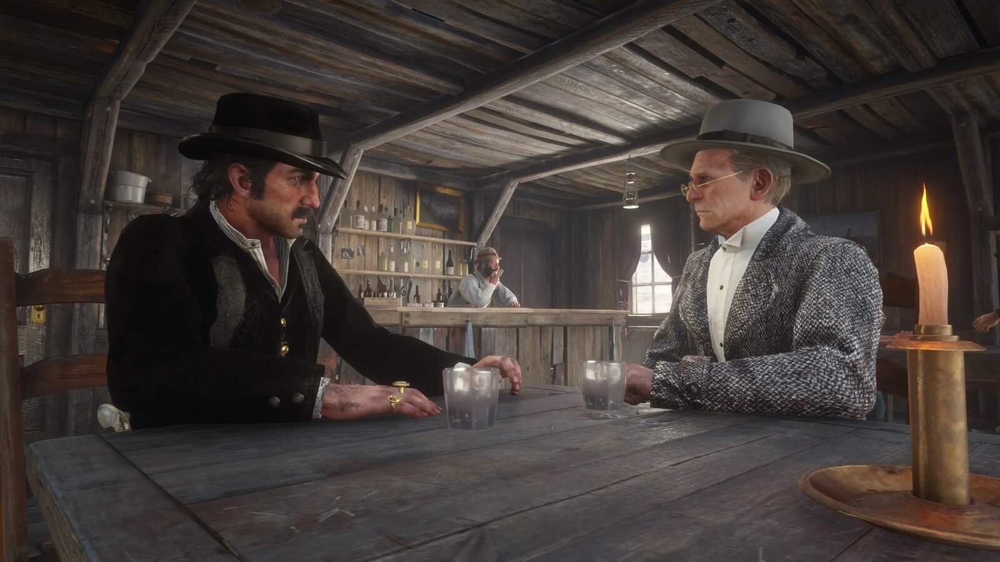
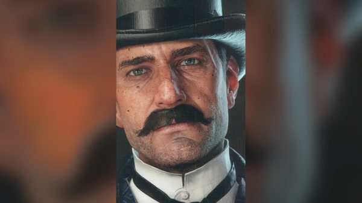
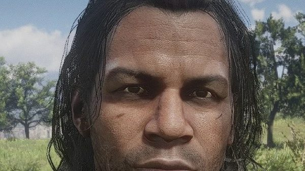
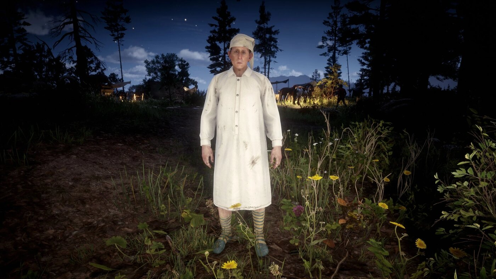

Character · Van der Linde gang
Leopold Strauss
Leopold Strauss is the bookkeeper of the Van der Linde gang in Red Dead Redemption 2, and runs its money-lending business. He sends Arthur Morgan to collect the debts.
One of those collections is how Arthur catches tuberculosis.
- Origin
- Vienna, Austria
- Died
- 1899, in Pinkerton custody
- Status
- Deceased
- Affiliation
- Van der Linde gang
- Role
- Bookkeeper and money lender
- Voiced by
- Howard Pinhasik
- Games
- Red Dead Redemption 2
Biography
Origins
According to the official guide, Strauss grew up poor in Vienna and was often ill as a child. He was sent to America by boat at 17, spent years as a swindler, and joined Dutch's gang for protection.
The debt collections
From chapter 2 onwards, Strauss gives Arthur a series of missions titled "Money Lending and Other Sins", in which Arthur collects debts from borrowers across the map. In the third, Arthur beats a sick farmer, Thomas Downes, who coughs blood on him. This is where Arthur contracts tuberculosis. After Downes dies, Strauss passes the debt on to his widow, Edith.
In chapter 4, Strauss takes part in the gang's robbery aboard the riverboat Grand Korrigan, with Arthur, Javier and Josiah Trelawny.
Expulsion and fate
In chapter 6, Arthur throws Strauss out of the camp for ruining lives with his loans, and gives him money as he leaves. In the 1907 epilogue, Charles Smith tells John Marston that Strauss was arrested by the Pinkertons, interrogated, and died in custody without giving up the gang. His death is reported, not shown.
Relationships

Arthur Morgan
Collects his debts, catches tuberculosis doing it, then throws him out.

Dutch van der Linde
Gives him the gang's protection and its books.

Josiah Trelawny
Plans the riverboat robbery he takes part in.

Charles Smith
Tells John in 1907 that Strauss died in custody.
Development and performance
Strauss is played by Howard Pinhasik.
Reception
Game Informer's December 2018 ranking of the gang placed Strauss 23rd, noting that "it's his cruel business that results in Arthur getting infected with tuberculosis". In Polygon, Colin Campbell described him as "a slightly sinister money lender complete with a German accent and a taste for cruelty".
Gallery
